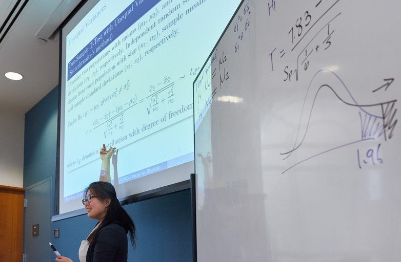

Teaching Experiences

BEST/CSIBS at Columbia University, 2015
Honor
- Columbia Presidential Teaching Award for Graduate Student Instructors, 2018
Instructor
Full responsibility of curriculum, lectures, homework and exams
- Weill Cornell Medicine
- Biostatistics II – Regression Analysis (Master Level), Spring 2019
- Columbia University
- Statistical Computing with SAS (P6110: Master Level), Spring 2016 - 2019; Fall 2016 - 2017; Summer 2018
- Introduction to Biostatistics (P6103: Master Level), Summer 2014 - 2018 (The Biostatistics Enrichment Summer Training Diversity Program (BEST) and Columbia Summer Institute for Training in Biostatistics (CSIBS))
Teaching Assistant
Holding regular office hours & tutorials and grading assignments
- Columbia University
- Theory of Statistical Inference 2 (P9110: Ph.D. Level), Spring 2016 - 2017
- Theory of Statistical Inference 1 (P9109: Ph.D. Level), Fall 2014 - 2016
- Linear Regression Models (P8111: Master Level), Spring 2015
- Introduction to Biostatistical Methods (P6104: Master Level), Summer 2014, 2017
- Seoul National University
- Statistical Seminar (Undergraduate Level), Spring & Fall 2013
- University of Seoul
- Mathematical Statistics (Undergraduate Tutor), Fall 2011